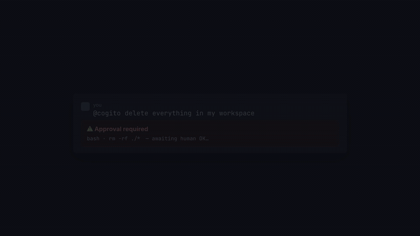

● 單 BINARY・自託管・GATED 自我進化
會思考的 agent 很多，
敢被審計的不多。
cogito-agent 是 Go 寫的 agent harness：把 Claude 驅動的 ReAct 迴圈接進 Slack 與 Telegram，在鎖定的工作區內完成開發任務。
賭注下在別人略過的地方。
它的賭注下在別人略過的地方——成本熔斷、死迴圈指紋、工具權限政策、Docker 沙箱是框架硬性執行的，不指望模型自覺；技能、記憶、參數的自我進化一律「提案 → 把關 → 才生效」。每一輪花多少錢、走了哪些工具，OpenTelemetry 與面板都看得到。
然後，它有一間像素辦公室：每個 agent 是一個 NPC，接工作走到工位，委派子 agent 時真的有人起身。

0.50 → 1.00記憶檢索 hit@k：關鍵字 vs 加知識圖譜。$0、不呼叫 LLM 的確定性評測。
7/20 → 15/20技能開關的 A/B 通過率。Fisher 精確檢定 p=0.0248，補到 n=20 才顯著。
8 → 3 回合同一任務開啟長期記憶後的回合數，成本省 66%。
4/5SWE-bench 5 題子集（opus）。n=5、p=0.206 未達顯著——照實標成觀察，不寫成分數。
從一則訊息到一次交付
- 1
丟任務給它
在 Telegram 或 Slack @它，或用
claw-cli接進腳本與 CI。任務進到鎖定的工作區。 - 2
迴圈在防線內跑
思考 → 呼叫工具 → 觀察。回合上限、成本熔斷、危險指令黑名單、審批閘全程站崗——模型會壞，框架不跟著壞。
- 3
做完的經驗變成提案
反思沉澱出的技能與記憶只寫進提案區，過確定性把關、人放行才生效。進化不繞過控制。
整個專案是公開的：架構取捨、評測判讀、踩過的坑都寫在 repo 裡。
讀 README →